Orchard gallery
What the runs look like right now: MuJoCo Warp physics on Metal + the native Metal tier-0 batched renderer, Apple M4 Max.
Images were produced by scratch/gallery_scripts/ on this machine; the throughput numbers are copied from docs/PHASES.md, not re-measured.
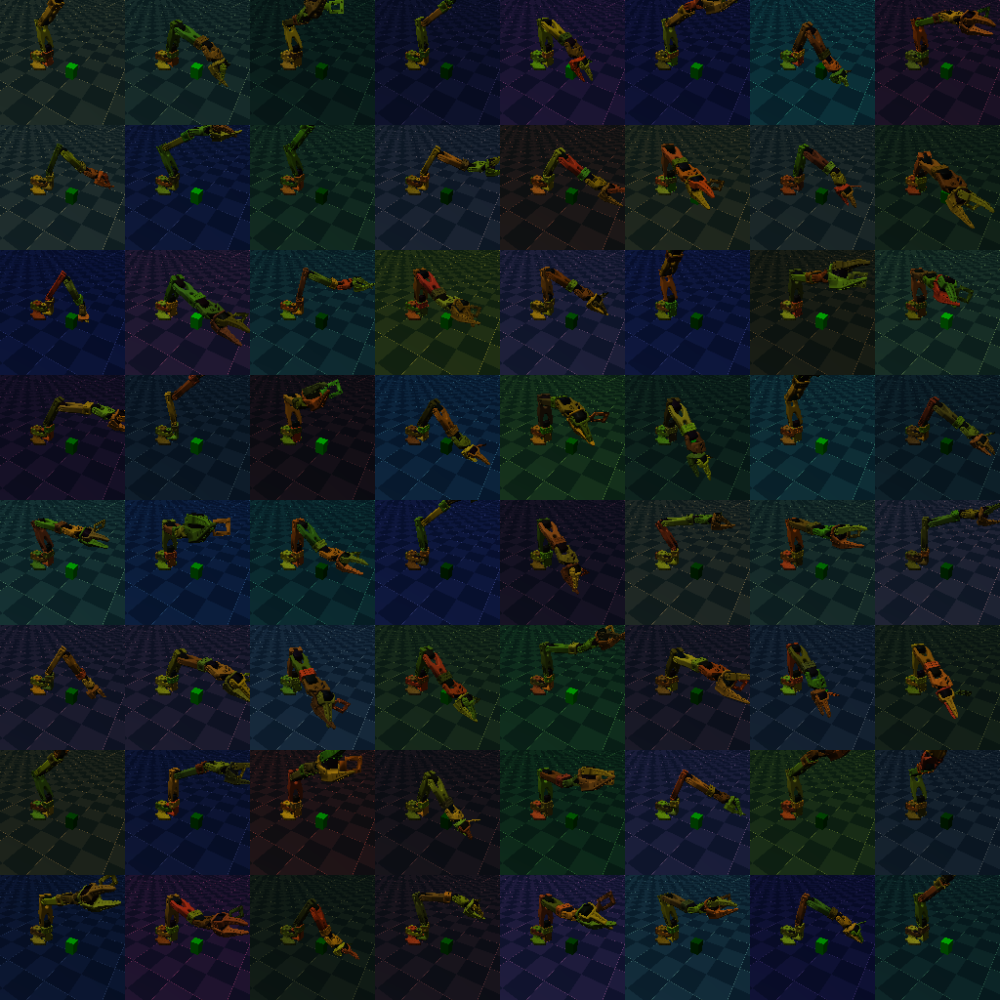
assets/so101/scene_box_rl.xml, camera base_cam) as an 8×8 grid of 128 px tiles, one tier-0 render call, undecimated meshes. Arm joints qpos[:6] uniform in [−0.6, 0.6]; per-env per-geom color randomization via set_colors (multipliers in [0.3, 1], which is why tiles are darker than the unrandomized reference below). Rendered on this machine.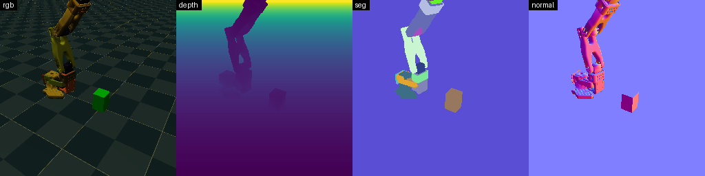
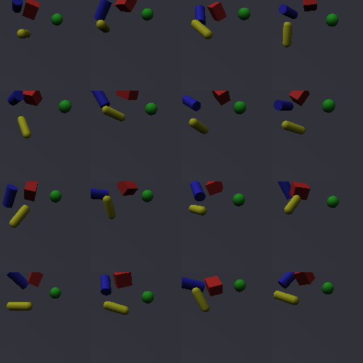
tests/test_render_tier0.py (box, sphere, cylinder, capsule on a plane; mjbatch-metal's bench.py scene) as a 4×4 grid of 16 envs, 128 px, random free-body poses. This is the scene the render-throughput numbers below are measured on.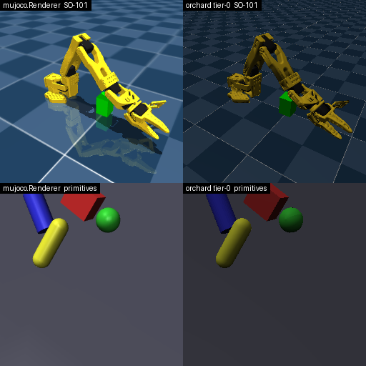
mujoco.Renderer (left) and metalsim tier-0 (right) at 256 px; SO-101 on top, primitives below. Tier-0 has no shadows, reflections or skybox, so shading differs; geometry agrees (measured in tests/test_render_tier0.py: silhouette IoU 0.994–1.0, depth median error ≤ 0.14 mm, per-geom segmentation IoU ≥ 0.987).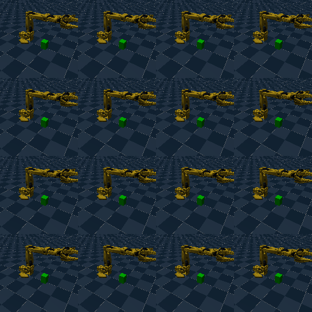
BatchSim (MuJoCo Warp, N=16, 4 substeps per control step, dt 0.02 s) → Tier0Renderer (128 px, undecimated) with event-ordered handoff and zero-copy MPS outputs; actuator targets are slowly varying sinusoids with a per-env phase offset, so the 16 tiles diverge from an identical first frame. Frames were read back to the host for encoding only. Recorded on this machine.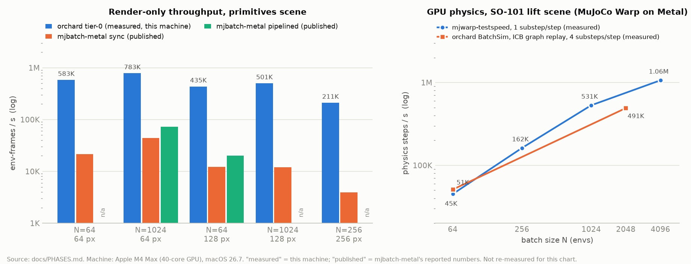
mjwarp-testspeed (1 substep per step) and metalsim BatchSim with indirect-command-buffer graph replay (4 substeps per step); both measured on this machine. All values are transcribed from docs/PHASES.md.Tier 1 ray tracing
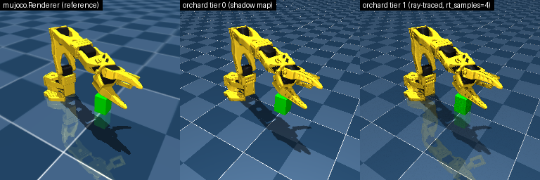
qpos[:6] = 0.4, −0.3, 0.5, 0.2, 0.3, 0.5; camera base_cam, 256 px): mujoco.Renderer reference | tier 0 (raster + tiled shadow map) | tier 1 (same raster G-buffer, with hardware ray queries against the sensor layer's acceleration structure for cone-sampled soft shadows, ambient occlusion and one mirror reflection ray, rt_samples=4, 9 rays/pixel). Tier 1 recovers MuJoCo's planar floor reflection that tier 0 lacks. All three rendered on this machine; fidelity numbers in docs/PHASES.md (tier 1 vs reference PSNR 19.7 dB, FLIP 0.305; tier 0: 19.1 / 0.318) are measured on this machine.Sensors
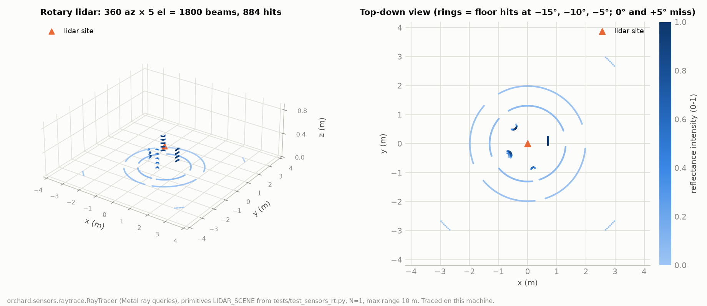
metalsim.sensors.raytrace.RayTracer (Metal ray queries, one instance acceleration structure rebuilt per frame) on the primitives LIDAR_SCENE from tests/test_sensors_rt.py: 360 azimuths × 5 elevations (−15° to +5°) = 1,800 beams from a site 0.35 m above the floor, N=1, max range 10 m; 884 hits, colored by reflectance intensity. Rings are floor hits of the three downward elevations; the −5° ring at 4 m survives only where the 3 m half-extent floor quad reaches (its corners); 0° and +5° miss everything but the objects. Traced on this machine. Lidar parity vs MuJoCo C mj_ray (median |Δrange| < 2 mm) is measured in tests/test_sensors_rt.py.Learning
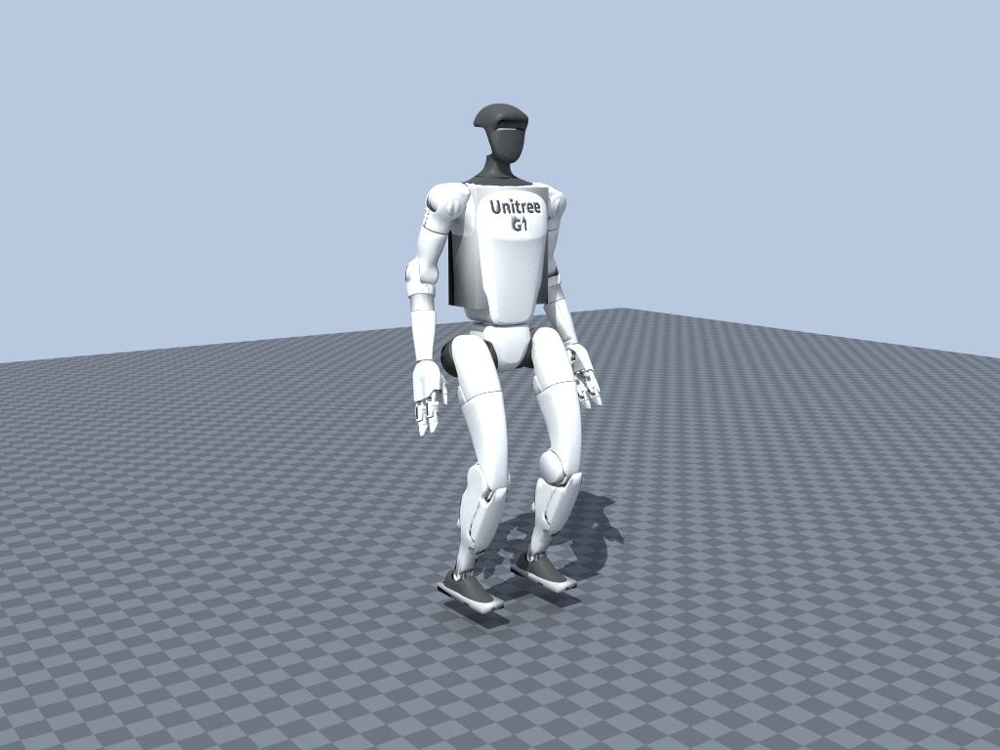
g1_minimal.usd) rendered by the tier-2 path tracer at 512 samples per pixel, 4 bounces: the 43 visual meshes (343K faces) and their OmniPBR materials are read from the USD's instanced prims by metalsim.scene.usd_to_mjcf; the physics model underneath is the same one the G1 benchmark uses (three convex colliders, Isaac's actuators). Camera, key light, floor material and sky were added for the picture. Rendered on this machine.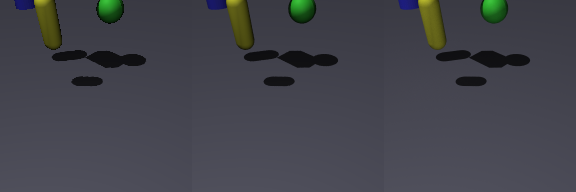
tests/test_render_tier2.py on this machine; the same test suite checks the tracer's radiometry analytically (Lambertian plane 0.4000 exact, white furnace 0.498 for 0.5) and its 1/√spp convergence.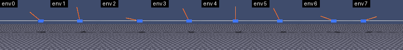
metalsim.learn.cartpole_rgb.CartpoleRGBEnv (Isaac Lab's Cartpole-RGB task shape: 100×100 tiled camera, obs["image"] uint8 on MPS) after reset() and 20 uniform random actions; the tiles are the learner's observation tensor read back to the host only for this image. Rendered on this machine. The throughput of this env (48,056 steps/s at N=1024, physics + tiled render + reward/reset) is measured on this machine in docs/PHASES.md.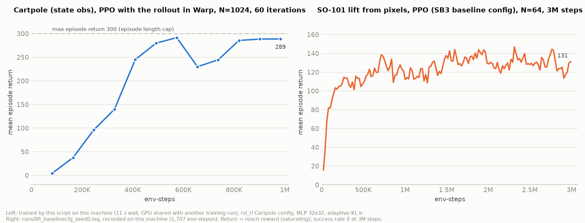
metalsim.learn.ppo_warp (rollout of T steps as replays of one captured Warp graph, torch update) on the MJCF cartpole with rsl_rl's Cartpole config, N=1024, 60 iterations of 16 steps (~1M env-steps); mean episode return vs env-steps, dashed line at the 300 cap. Trained by the gallery script on this machine in about 11 s of wall time while another training run shared the GPU. Right: the SO-101 lift-from-pixels PPO run with SB3's baseline config (N=64, 3M steps), parsed from runs/lift_baselinecfg_seed0.log, recorded on this machine at 1,707 env-steps/s; the return is a saturating reach reward and the success rate stays 0 at 3M steps. The lift scene is a reconstruction of a scene that lives on another machine and has no published benchmark, so it is a pipeline demonstration, not a parity claim (see docs/PARITY.md). Both curves are measured on this machine; no Isaac numbers appear here.Isaac Lab comparison
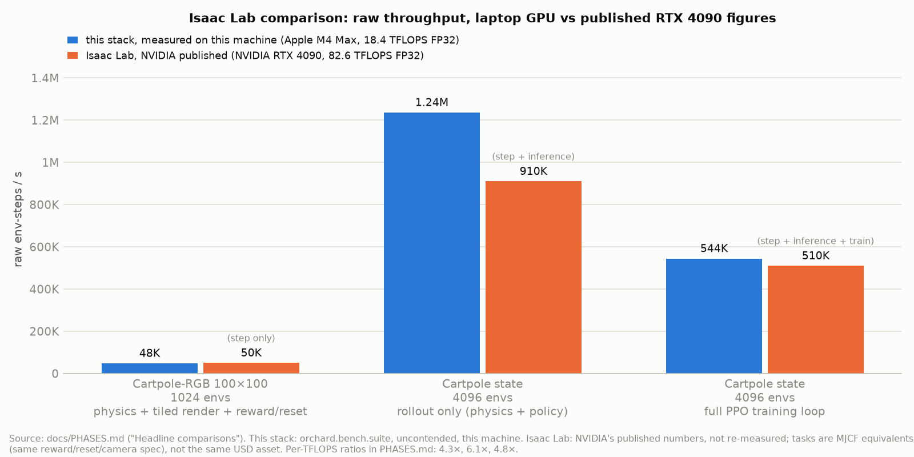
docs/PHASES.md that have both numbers: Cartpole-RGB 100×100 at 1024 envs, cartpole state rollout at 4096 envs, and the full cartpole PPO training loop at 4096 envs. Blue bars are measured on this machine (Apple M4 Max, 18.4 TFLOPS FP32, metalsim.bench.suite, uncontended). Orange bars are NVIDIA's published Isaac Lab figures for an RTX 4090 (82.6 TFLOPS FP32), not re-measured here, and each is annotated with what it covers (step only / step + inference / step + inference + train). Caveat (read before quoting): these cartpole tasks are MJCF equivalents with the same reward, reset and camera spec, not Isaac's USD asset, and the cartpole has no contacts, so the comparison exercises the pipeline (tiled render, zero-copy observations, graph replay) rather than the physics. The comparison on Isaac's own asset is the Unitree G1 velocity task loaded from Isaac Lab's g1_minimal.usd with Isaac's actuator table, initial state and solver budget; its numbers and the tests behind each row are in docs/PARITY.md. Per-TFLOPS ratios from docs/PHASES.md: 4.3×, 6.1×, 4.8×.Fidelity protocol against Isaac Sim 5.1 (PhysX + RTX, NVIDIA L4)
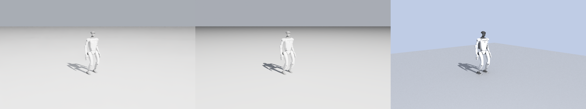
docs/PARITY.md §1.7). Isaac's plane terrain ignores visual_material, so the grey ground is bound explicitly after the scene is built.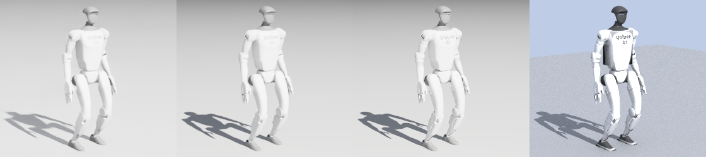
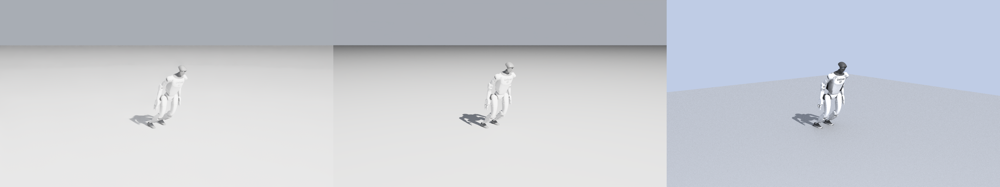
Same policy, both simulators: training-stage videos
Each clip is one policy checkpoint rolled out for 8 s (400 control steps at 50 Hz, command 0.5 m/s forward) from Isaac's default state in Isaac Sim 5.1 (PhysX + RTX real-time, NVIDIA L4) on the left and in MetalSim (MuJoCo Warp at 2.5 ms + tier-2 path tracer, M4 Max) on the right, same camera, lights and grey ground. Isaac's checkpoints come from its own rsl_rl run (metalsim/parity/isaac_side/play_policy.py on the VM); MetalSim's from runs/g1_flat_ppo_1500_dt25_fixed (trained before the PPO rollout fixes). Made by metalsim.parity.side_by_side; distance travelled and final pelvis height are measured from each simulator's own state.
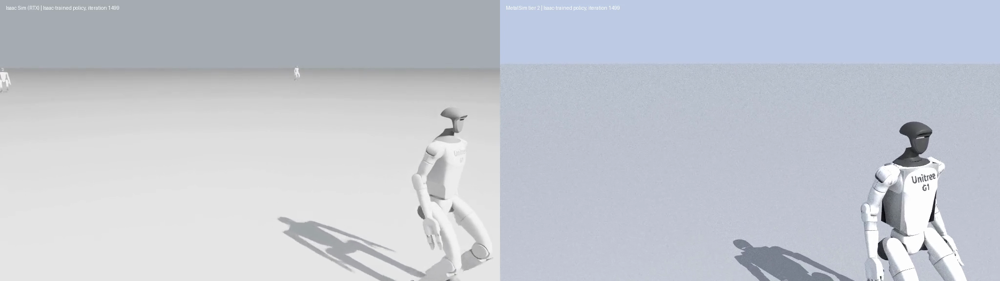
| policy | trained in | Isaac: x travelled / final pelvis z | MetalSim: x travelled / final pelvis z |
|---|---|---|---|
| iteration 100 | Isaac | −0.01 m / 0.70 m (stands) | 0.05 m / 0.70 m (stands) |
| iteration 500 | Isaac | 3.19 m / 0.62 m (walks) | 3.09 m / 0.61 m (walks) |
| iteration 1000 | Isaac | 3.02 m / 0.63 m | 2.96 m / 0.63 m |
| iteration 1499 | Isaac | 3.11 m / 0.64 m | 3.21 m / 0.62 m |
| iteration 100 | MetalSim | 0.94 m / 0.03 m (falls) | 0.98 m / 0.03 m (falls) |
| iteration 500 | MetalSim | 0.16 m / 0.56 m (stands) | −0.64 m / 0.00 m (falls) |
| iteration 1000 | MetalSim | −0.60 m / 0.06 m (falls) | 0.15 m / 0.55 m (stands) |
| iteration 1500 | MetalSim | −0.01 m / 0.04 m (falls) | 0.80 m / 0.54 m (stands) |
Reading: Isaac's PhysX-trained policies behave the same in MetalSim, within 0.1 m of travel and 2 cm of pelvis height over 8 s, at every stage. MetalSim's own pre-fix policies are brittle in both directions (the iteration-500 one stands in Isaac and falls here; 1000 and 1500 the reverse), consistent with the repeated-noise defect found in the old PPO rollout (docs/PARITY.md §1.5); the fixed learner's run is in progress.
Round two: MetalSim-trained policies with the fixed learner, in both simulators
Same protocol as above (8 s, command 0.5 m/s forward, Isaac Sim RTX on the left, MetalSim tier 2 on the right), for the checkpoints of the fixed-PPO run on the MuJoCo Warp G1 task (runs/g1_flat_ppowarp_fixed.log, rough reward weights, recorded 2026-09-25). The MetalSim side here runs the MuJoCo Warp fork at the corrected plane-vs-convex contact set (fork 284dcd1), which was not the collider these policies trained on; the Isaac side is PhysX. Measured from each simulator's own state:
| policy (MetalSim-trained, fixed PPO) | Isaac: x travelled / final pelvis z | MetalSim: x travelled / final pelvis z |
|---|---|---|
| iteration 100 | 0.68 m / 0.00 m (falls) | 0.76 m / 0.01 m (falls) |
| iteration 300 | 0.05 m / 0.63 m (stands, does not walk) | 3.46 m / 0.66 m (walks) |
| iteration 500 | 3.27 m / 0.69 m (walks) | 4.16 m / 0.68 m (walks) |
| iteration 1000 | 3.90 m / 0.67 m (walks) | 4.06 m / 0.69 m (walks) |
Reading: with the learner fixed, our policies now transfer to PhysX in the same way Isaac's transfer to us: by iteration 1000 the same policy walks 3.90 m in Isaac and 4.06 m here (4 % apart), upright in both. The iteration-300 policy, which had only just begun to track the command, stands in PhysX but walks here, so an early gait that exploits our contact model does not yet carry over; by 500 it does. The earlier round's pre-fix policies (above) fell in one simulator or the other at every stage.
Machine: Apple M4 Max, 40-core GPU, 64 GB, macOS 26.7. Scripts: scratch/gallery_scripts/01_so101_atlas_and_channels.py, 03_primitives_grid.py, 04_reference_vs_metalsim.py, 05_rollout.py, 06_throughput.py, 07_tier1_vs_tier0_vs_reference.py, 08_lidar_pointcloud.py, 09_cartpole_learning_curve.py, 10_isaac_comparison.py, 11_cartpole_rgb_tiles.py.